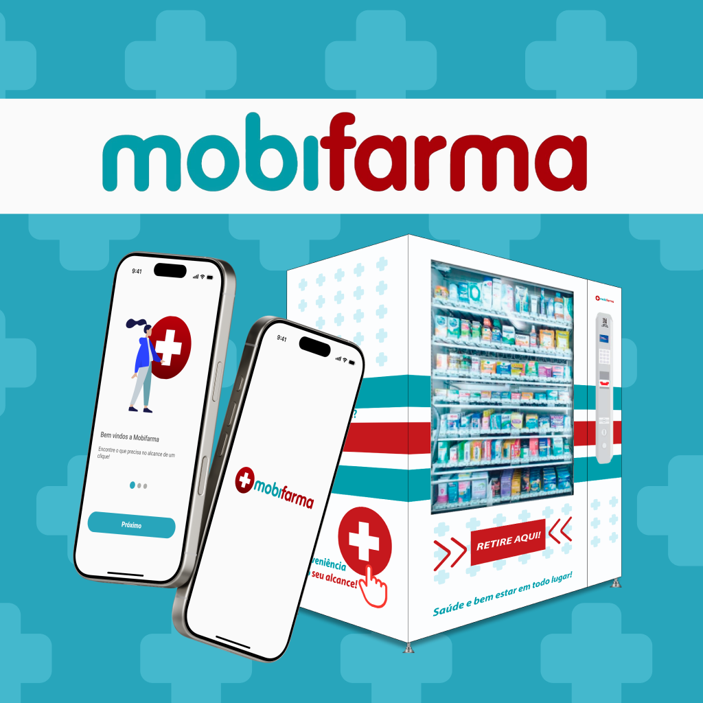
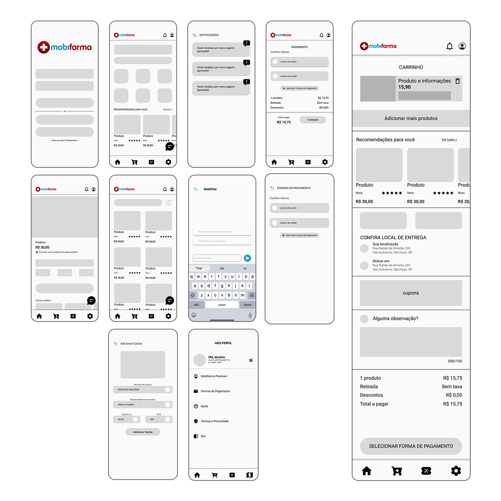
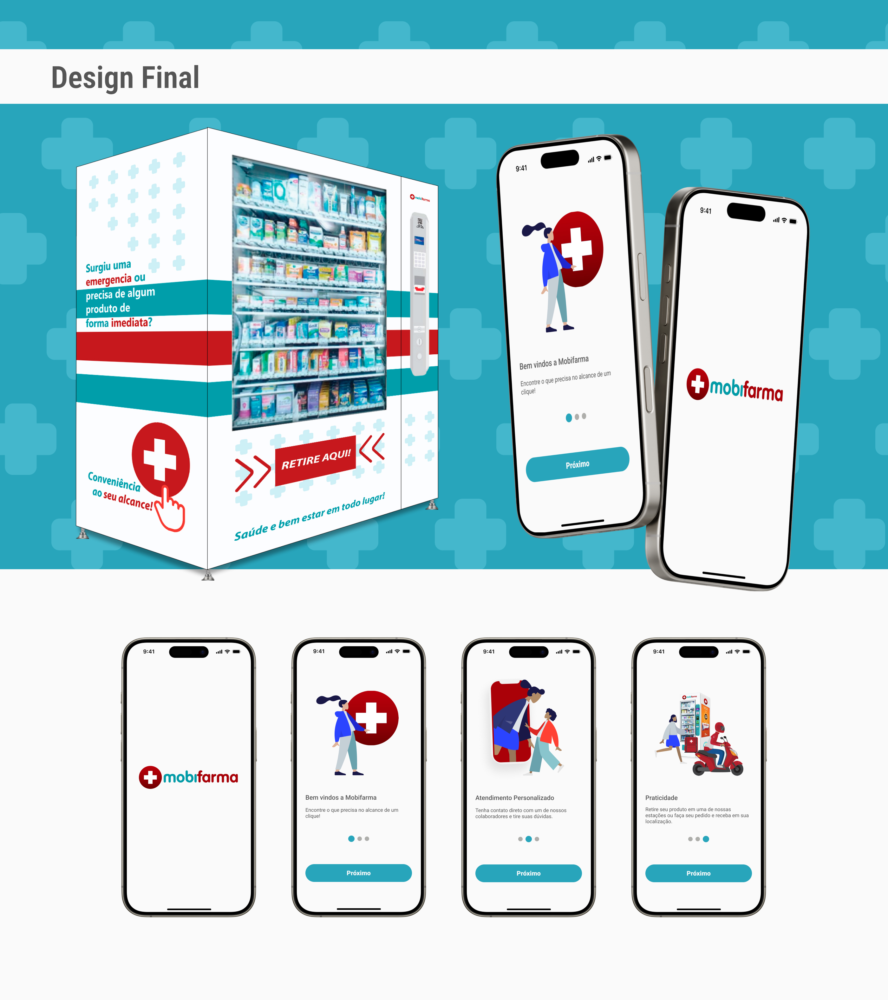
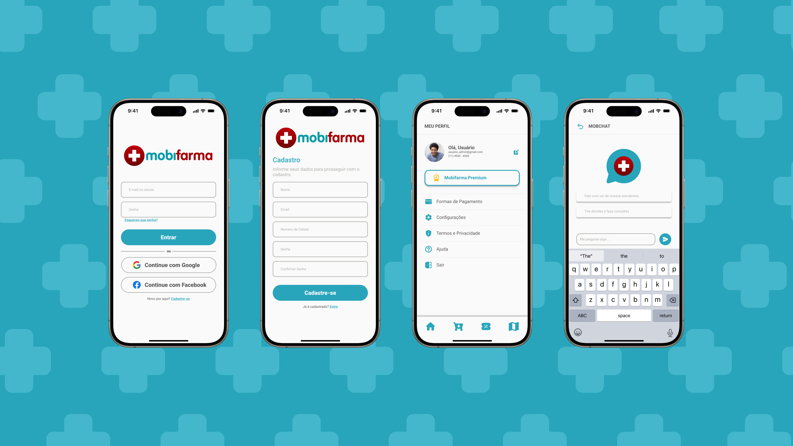
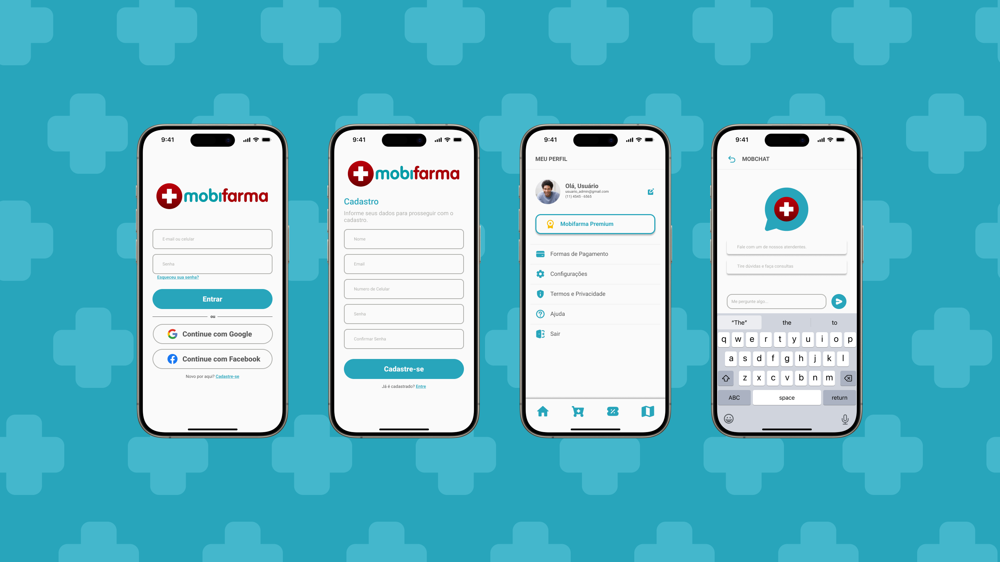

MobiFarma
Ecossistema phygital de varejo farmacêutico automatizado que integra inteligência mobile a vending machines para simplificar o acesso a cuidados pessoais e saúde.

CASE_02 // CAPA_PRINCIPALREC ●Sobre o projeto
O MobiFarma é um produto digital e físico focado na automação do varejo de saúde, beleza e higiene. O ecossistema conecta uma rede de vending machines dispostas em locais de alto fluxo de pessoas — como estações de transporte público, condomínios empresariais e centros universitários — a um aplicativo mobile intuitivo. A solução permite tanto a compra imediata e presencial quanto a consulta de estoque em tempo real, reserva e retirada ágil de produtos.
Atuei de forma holística como UX/UI & Product Designer, liderando o processo desde a estruturação estratégica até o refinamento gráfico, incluindo pesquisa, arquitetura da informação, design de interface e direção visual da máquina física.
Problema identificado
O consumo de produtos de conveniência farmacêutica em grandes centros urbanos enfrenta gargalos operacionais e de experiência:
Perda de tempo em filas: Consumidores perdem minutos valiosos em drogarias tradicionais para adquirir itens simples do cotidiano, como antissépticos bucais, desodorantes, preservativos e curativos.
Falta de visibilidade e previsibilidade: Vending machines convencionais costumam operar isoladas, sem interface mobile que informe ao usuário se determinado produto está disponível naquele ponto antes do deslocamento.
Fricção no pagamento presencial: Interfaces físicas lentas e opções de pagamento rígidas estendem o tempo de permanência na frente do terminal, prejudicando a proposta de conveniência.
Objetivos do projeto
- Otimizar o tempo de jornada e reduzir o tempo total de transação para menos de 45 segundos na máquina física e sob 30 segundos no aplicativo.
- Integrar os canais físico e digital (phygital) com geolocalização de pontos de venda, cupons de desconto ativáveis e histórico unificado.
- Projetar acessibilidade e clareza visual para atender perfis com diferentes níveis de maturidade digital.
Contexto do projeto
Meu papel no projeto: Atuei de forma holística como UX/UI & Product Designer, liderando o processo desde a estruturação estratégica até o refinamento gráfico:
- UX Research & Estratégia de Produto: mapeamento de problemas, entrevistas quanti-qualitativas, análise de concorrência e definição da Matriz CSD.
- Arquitetura de Informação & UX Design: criação dos fluxos de navegação, mapeamento da jornada do usuário e prototipagem de baixa/média fidelidade.
- UI & Design Gráfico: construção do Design System com tipografia, paleta de cores, componentes acessíveis e fechamento do layout da sinalização física da vending machine.
FERRAMENTAS UTILIZADAS
Processo de design
O projeto foi estruturado com a metodologia Duplo Diamante, combinando pesquisa, síntese, design e validação. As etapas abaixo resumem o desenvolvimento do ecossistema phygital.
Descobrir
A etapa de descoberta combinou dados consolidados de mercado e pesquisa de campo com 20 usuários ativos de e-commerce e serviços de conveniência. A análise revelou que 85% evitam farmácias em horários de pico se precisarem de apenas um item de uso pessoal e 70% destacaram a importância de verificar a disponibilidade de estoque por aplicativo antes do deslocamento.
BENCHMARK
Foram analisadas soluções do mercado de farmácias digitais, aplicativos de entrega rápida e operações independentes de vending machines. Os pontos positivos observados incluíram a adoção de pagamento por aproximação e boa exposição luminosa dos produtos; os gargalos mapeados ficaram na ausência de integração entre estoque e aplicativo e na baixa clareza visual das interfaces.
MATRIZ CSD
● CERTEZAS
O tempo de espera é o principal fator de insatisfação do cliente.
Tons de azul transmitem sensação de higiene, segurança e saúde.
● SUPOSIÇÕES
Notificações push por geolocalização aumentam a taxa de conversão.
Usuários acima de 50 anos preferem pagar direto na máquina a usar o app.
● DÚVIDAS
Qual a melhor forma de autenticar a retirada do pedido no totem?
Qual o limite aceitável de passos durante o checkout mobile para itens de urgência?
Definir
A solução precisava ser modular: o aplicativo não deveria servir apenas como e-commerce tradicional, mas como painel central do ecossistema MobiFarma, permitindo localizar terminais, resgatar cupons e acelerar compras.
PERSONAS
Carlos Ferreira: 54 anos, gerente de loja, valoriza interações simples, sem telas poluídas ou muitos passos. Necessita de interface limpa, contraste adequado e caminho direto até a confirmação.
Mariana Costa: 29 anos, analista de marketing, prioriza agilidade, organização e acesso rápido ao estoque. Necessita de mapa de localização em tempo real, suporte a pagamento com um clique e confirmação imediata.
FLUXO DE USUÁRIO
Tela Inicial → Seleção de Produto → Verificação de Estoque → Carrinho → Pagamento → Retirada ou Entrega
MATRIZ DE PRIORIZAÇÃO
Alto Impacto / Baixo Esforço: mapa com sinalização das vending machines próximas; catálogo categorizado; aba de cupons rápidos.
Alto Impacto / Alto Esforço: sincronização de estoque em tempo real; liberação por QR Code na câmera do totem.
Desenvolver
Iniciei a estruturação visual com wireframes de média fidelidade para testar a densidade de informação por tela, garantindo que o visual não ficasse poluído nem no aplicativo nem na interface da máquina.
IDEAÇÃO & WIREFRAMES
Os fluxos mobile foram organizados com bottom navigation fixa e barra superior com foco em localização e notificações. A interface da vending machine foi estruturada com comunicação direta e visual de impacto para atrair quem passa no local.

WIREFRAME // FLUXO_MOBIFARMAREC ●Entregar
Finalizei o sistema visual com diretrizes de tipografia, paleta, componentes e padrões de interação para garantir consistência entre app, máquina e comunicação visual.
Design final e sistema visual
As decisões foram guiadas pela combinação entre confiança sanitária, rapidez na interação e legibilidade. O visual foi construído para transmitir segurança e simplicidade, sem perder energia e modernidade.
- Tipografia: Roboto para leitura e interface digital, VAG Rounded para títulos e marca, reforçando acolhimento e modernidade.
- Paleta de cores: azul predominante para saúde, segurança e credibilidade; vermelho para ação, alertas e sinalização; cinza e branco para contraste e legibilidade.
- Sinalização da vending machine: grafismos em cruz, cores vibrantes e instruções visuais diretas para alinhar a marca do aplicativo à máquina física.

UI // DESIGN_FINAL_01REC ● UI // DESIGN_FINAL_02REC ●
UI // DESIGN_FINAL_02REC ●
 UI // DESIGN_FINAL_03REC ●
UI // DESIGN_FINAL_03REC ●

UI // DESIGN_FINAL_04REC ● UI // DESIGN_FINAL_05REC ●
UI // DESIGN_FINAL_05REC ●

UI // DESIGN_FINAL_06REC ●Resultados e impactos
Os testes apontaram alto potencial de retenção e satisfação, especialmente em perfis de usuários que valorizam conveniência, comércio digital e compra de emergência.
Aprendizados e reflexões
O principal aprendizado foi entender que um ecossistema phygital precisa ser coerente em todos os pontos de contato. A experiência digital e a interação física precisam funcionar como uma única jornada, com consistência de informação, rapidez e confiança.
Além disso, a acessibilidade e a clareza tornam-se ainda mais importantes quando o contexto é saúde e conveniência, exigindo leitura com contraste, elementos grandes e navegação simples.
Conclusão
O Mobifarma representa uma resposta clara para a necessidade de conveniência em pontos de alta circulação, conectando tecnologia, varejo e saúde em uma experiência instântânea e eficiente. A ideia central é remover obstáculos e entregar acesso rápido àquilo que as pessoas precisam no momento certo.
Obrigado!
Este foi meu primeiro projeto profissional, então agradeço à equipe da Smartool pelo suporte e colaboração ao longo de todas as etapas de ideação, teste e validação, e a cada participante das pesquisas. Projetar o Mobifarma me permitiu aprofundar conhecimentos no desenvolvimento de experiências digitais, entendendo que a verdadeira conveniência nasce do equilíbrio entre simplicidade operacional, rigor técnico e acessibilidade.